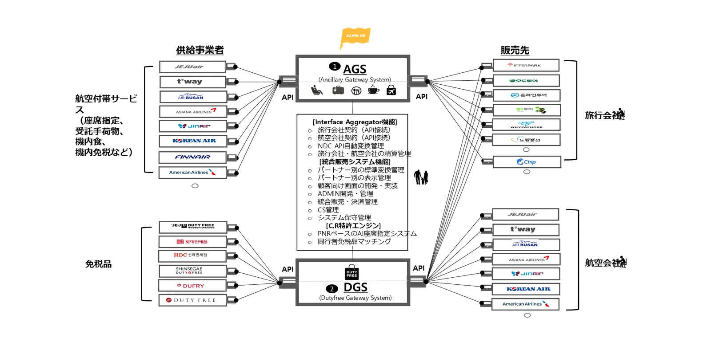

直接連携すると起きること
付帯サービスは航空会社ごとにAPI、商品構成、価格ルール、払い戻し規定が異なります。旅行会社が直接連携すると航空会社の数だけ開発が必要になり、航空会社がシステムを変えるたびに修正し、問い合わせ対応や精算も自社で行わなければなりません。航空会社も旅行会社ごとに個別接続が必要です。
| 区分 | 航空会社と旅行会社が直接連携 | オールウィンエアと一度連携 |
|---|---|---|
| 開発 | 相手の数だけ個別開発 | オールウィンエアと1回連携 |
| 仕様の違い | 各社のAPI・NDC仕様をそれぞれ解釈 | オールウィンエアが標準仕様に変換 |
| 保守 | 相手のシステム変更のたびに各自修正 | オールウィンエアが対応 |
| 購入画面 | 各自で企画・開発 | オールウィンエアの購入画面またはAPI連携を選択 |
| 決済・精算 | 相手ごとに個別精算 | オールウィンエアが統合決済・精算 |
| 顧客CS | 販売先が直接対応 | オールウィンエアのカスタマーセンターが対応 |
| サービス追加 | 新商品ごとに追加開発 | 同じ連携に商品が順次追加 |
約1/8旅行会社：航空会社ごとの直接連携と比べた連携リソース
約1/20航空会社：旅行会社ごとの直接連携と比べた連携リソース
韓国の航空会社8社、旅行会社20社と提携すると仮定した推計（2021年の提携提案資料より）
オールウィンエアが担うこと

つなぐ
- 航空会社・供給元のAPI、NDC連携
- 販売先とのAPI接続
- パートナーごとの標準変換
売る
- 顧客向け購入画面の開発・提供
- 販売先ごとの表示・商品管理
- 販売・決済の一元管理
運用する
- 付帯サービス購入者のCS
- 供給元・販売先の精算
- システム保守、管理画面（ADMIN）
技術
- PNRベースのAI座席レコメンド
- 同行者単位の商品レコメンド
- 購入率（C.R.）特許エンジン
提携先の作業はシンプルになります
- オールウィンエアと契約し、連携方式を決めます（API連携、またはオールウィンエアの購入画面との接続）。
- 一度連携してテストします。
- 販売を開始します。その後の商品追加、航空会社側の変更対応、CS、精算はオールウィンエアが行います。
よくあるご質問
- 航空会社ごとに個別開発が必要ですか？
- いいえ。オールウィンエアと一度連携すれば、つながっているすべての航空会社・供給元の付帯サービスを販売できます。新しい航空会社や商品が追加されても、追加開発はほとんど不要です。
- 付帯サービスの問い合わせは誰が対応しますか？
- オールウィンエアのカスタマーセンターが、付帯サービス購入者の問い合わせ、変更・払い戻しに対応します。
- 購入画面は自社で作る必要がありますか？
- 選べます。オールウィンエアが提供する購入画面に接続するか、API連携で自社画面に組み込むことができます。
オールウィンエアとの連携を始めましょう
航空会社・付帯サービス提供事業者も、旅行会社・OTA・旅行プラットフォームも、ひとつの連携から始められます。連携方式とスケジュールは提携先の環境に合わせてご相談します。日本語・英語でのお問い合わせも可能です。
提携窓口メール（海外からはメールを推奨）partnership@allwin.co.kr
代表電話（韓国国内・平日 09:00〜18:00 KST）+82 1522-2284